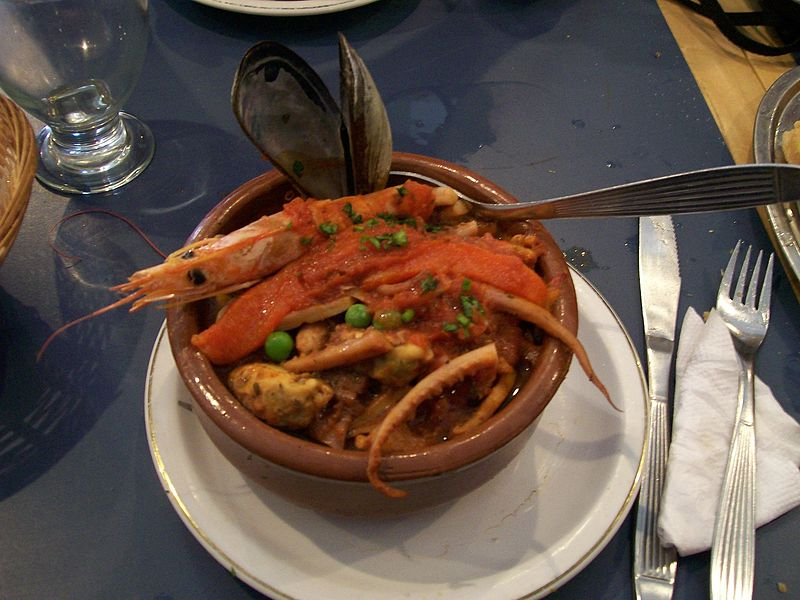

Las comidad tipicas que ofrece Restaurante las delicias del Sinú:
Ofrece comidas tipicas de la region caribe, que son hechas con manos
llenas de amor y alegria mucha dedicacion para que el cliente quede
satisfecho. y vuelva y llegue a nuestro restaurante dentro los platos tipicos tenemos:
Sancocho costeño
Cazuela de mariscos
chicharron con yuca
Viuda de bocachico
Arroz con coco y mojarra frita
Sancocho costeño
El sancocho es un caldo espeso o sopa a base de tubérculos como la
papa que tiene un alto indice de calorias y grasa. Los ingredientes más destacados del Sancocho
y que en esta receta vamos a usar son la yuca o el ñame, plátano, legumbres
Cazuela de mariscos
Incluye ingredientes como langosta, langostinos, camarones, pescados,
almejas, calamares, guiso sofrito de verduras (cebolla, zanahoria, pimiento, tomate y especias) y opcionalmente crema de leche,
vino blanco y queso parmesano (en caso de gratinar), todo cocinado en leche de coco.

Chicharon con yuca
Yuca con chicharrón es un platillo autóctono de donde emerge una diversidad de texturas
y sabores que lo hacen una delicia al paladar.
Viuda de bocachico
la viuda de bocachico va acompañada de yuca y ñame